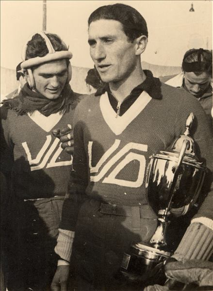

Hokej na ledu i klizanje
KRONOLOGIJA
1894.0
uređeno klizalište oko Staroga grada


Klizačica, oko 1920., GMV 73555
1896.0
Varaždinci kližu na smrznutim barama s kanadskim klizaljkama Halifax, Halbhalifax
1924.0
unutar VŠK osnovana sekcija za zimske sportove gdje se članovi bave klizanjem
1937.0
osnovan hokejaški klub pri ŠK Slavija
Tereni za hokej na ledu, Varaždin, 1930-e, GMV 72459
1939.0
osnovan hokejaški klub pri VŠD
1941.0
hokejaši VŠD prvaci Banovine Hrvatske (Renaud, Takač, Reisinger, Klobučarić, Antolić, Vojtjehovsky, Vrančić, Cerinski, trener D. Grims)

Artur Takač s prijelaznim peharom dr. Šubašića, Varaždin, 1941., GMV 106568
1946.0
početkom siječnja na igralištu pokraj varaždinske gombaone održana prva hokejaška utakmica u FNRJ u kojoj su se susreli Sloboda i Tekstilac (2 : 1 za Slobodu)
Finale u hokeju na ledu, Varaždin, 1946., GMV 50713
1947.0
hokejaški klub Tekstilac na prvenstvu Jugoslavije u Ljubljani osvaja treće mjesto
1956.0
prvenstvo Varaždina u brzom klizanju
1957.0
hokejaški klub Tekstilac mijenja ime u HK Drvodjelac te se plasira na finalni dio prvenstva Jugoslavije u Ljubljani
Hokejaški klub Drvodjelac, Varaždin, 1957., GMV 106567
1963.0
osnovan Omladinski hokejaški klub